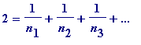
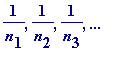
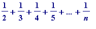

Problems
Problem(s) 1. An integer can be the sum of reciprocals of
distinct
integers (do you see how these ones come from perfect numbers?):
Can you make up some more? And how about triply-perfect numbers producing:

, with distinct unit fractions

Write a program that would enable you to find some triply-perfect, quadruply-perfect numbers, etc (with a view to finding sums of distinct unit fractions that add up to (1), (2), 3, 4, 5, ... )
Problem 2. Prove that no integer can be expressed as a sum of reciprocals of distinct
primes
.
Problem 3. Prove

is never an integer.